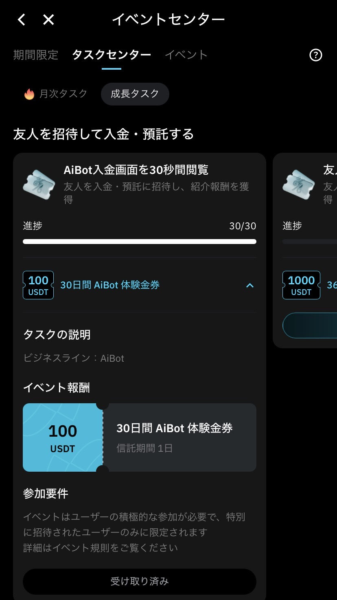
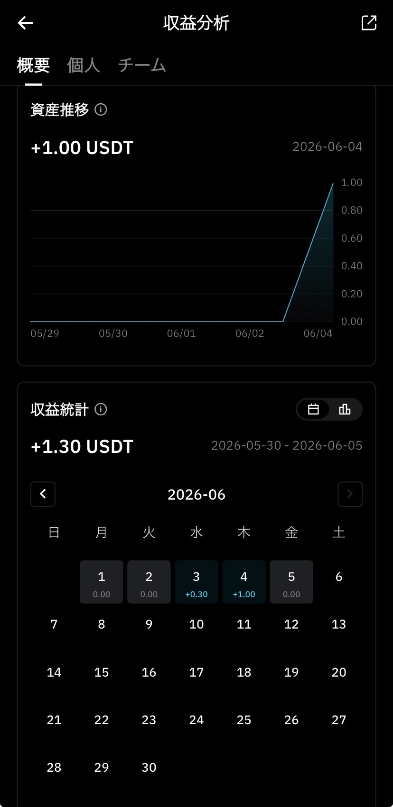

AI Botを中心にした導線
AIによる市場分析・自動運用・リスク管理を組み合わせたサービスとして、AI Botが主要導線になっています。
AI BOT / FREE TRIAL / RISK GUIDE
いきなり入金する必要はありません。まずは無料登録後に、イベントセンター、タスクセンター、AiBot体験金券、収益確認画面、運用期間の違いを自分の目で確認できます。
※本ページは紹介リンクを含みます。利益保証・入金の強制・投資助言を目的としたものではありません。
Free trial route
今回確認できた画面では、イベントセンター内のタスクセンターに「AiBot入金画面を30秒間閲覧」というタスクが表示されています。進捗は30/30で、報酬として100USDT分のAiBot体験金券が確認できます。
最初のゴール
BitradeXに興味があっても、いきなり入金する必要はありません。登録後のイベント・タスク・体験金券の表示を確認してから判断してください。


※イベント内容、報酬条件、体験金券の仕様は時期により変更される可能性があります。必ず登録後の最新画面をご確認ください。
Corporate style analysis
BitradeXは、AI技術を活用した暗号資産関連サービスを展開するプラットフォームとして案内されています。公式サイト上では、AI Bot、現物取引、先物取引、カード関連機能などが紹介されています。
AIによる市場分析・自動運用・リスク管理を組み合わせたサービスとして、AI Botが主要導線になっています。
イベントセンターやタスクセンターを通じて、登録後に体験金券やタスクを確認できる設計があります。
運用期間、ロック期間、償還条件、リスク開示を理解しないまま進めるのは避けるべきです。
AI Bot
AI Botは「放置で必ず増える仕組み」ではありません。見るべきなのは、操作性・収益表示・期間・リスク管理です。
どの画面から開始するのか、体験金券やクーポンがどこで確認できるのかを実際に見る。
日別収益、資産推移、収益統計などがどう表示されるかを確認する。
ロックなしのAI Dailyか、30日以上の定期型AI 30-360かを資金計画で選ぶ。
Risk management
AI Botを選ぶ時に大切なのは、どれくらい増えるかだけではありません。
その資金を、どれくらいの期間動かせなくても問題ないか。ここを理解して選ぶことが、リスク管理の第一歩です。
AI Dailyは、資金の流動性を重視したい方向けの選択肢です。長期ロックに不安がある場合や、まず操作感を確認したい段階に向いています。
AI 30-360は、30日・90日・180日・360日から運用期間を選ぶ定期型です。ロック期間中は早期償還できない点に注意が必要です。
生活費や近いうちに使う予定のある資金ではなく、一定期間動かさなくても問題のない余裕資金で検討することが重要です。
| 項目 | AI Daily | AI 30-360 |
|---|---|---|
| 運用タイプ | 柔軟型 | 定期型 |
| ロック期間 | なし | あり |
| 選択期間 | 柔軟 | 30日・90日・180日・360日 |
| 資金の動かしやすさ | 高い | 低い |
| 早期償還 | 可能と説明あり | ロック中は不可と説明あり |
| 向いている人 | 初心者・短期確認・流動性重視 | 中長期・計画運用・余裕資金 |
| 判断基準 | まず操作感を確認したい | 一定期間使わない資金で運用したい |
Before registration
信頼できる判断をするために、良い面だけでなく、始める前に理解しておきたいリスクも明記します。
体験金券の収益画面は判断材料のひとつですが、将来も同じ収益が出ることを意味しません。
AI 30-360は期間中に早期償還できないと説明されています。生活費や急に必要になる資金は避けるべきです。
暗号資産は価格変動が大きく、事業者情報・規約・リスク開示を自分で確認する必要があります。
日本から利用する場合は、国内登録状況や利用条件も含めて自己判断で確認してください。
Start with free check
BitradeXに興味があっても、最初から入金する必要はありません。イベントセンター、タスクセンター、AiBot体験金券、収益分析画面を確認し、自分に合うか判断してください。
紹介リンクを使用しています。登録・入金・運用はご自身の判断で行ってください。
FAQ
登録前の不安をできるだけ先に解消できるように整理しました。
いいえ。まずは無料登録後に、イベントセンター、タスクセンター、AiBot体験金券など、無料で確認できる範囲を見ることをおすすめします。
このページでは「100USDT分のAiBot体験金券」と表現しています。現金や出金可能な資金として断定するものではありません。実際の条件はアプリ内の表示を確認してください。
今回確認できた画面では、タスクセンター内に表示されていたAiBot関連タスクです。表示条件や報酬内容は時期により変わる可能性があります。
いいえ。画面に表示された収益推移は実例としての確認材料であり、将来の収益を保証するものではありません。
最初はロック期間のないAI Dailyや無料体験で操作感を確認し、その後に必要に応じて30日以上の定期型を検討する流れが自然です。
公式FAQ上では、AI 30-360はロック期間中の早期償還ができないと説明されています。選ぶ前に、30日・90日・180日・360日のどの期間なら資金を動かさなくても問題ないか確認してください。
保証されません。暗号資産やAI Bot運用には相場変動リスクがあります。表示されている収益画面や参考数値は、将来の結果を約束するものではありません。
はい。紹介リンクを使用しています。透明性のため明記していますが、登録・入金・運用を強制するものではありません。
Reference
イベント内容や商品仕様は変更される場合があります。必ず公式サイト・アプリ内表示・規約を最新状態で確認してください。
最終更新日：2026年6月5日 / 掲載内容は調査時点の情報と提供スクリーンショットに基づきます。